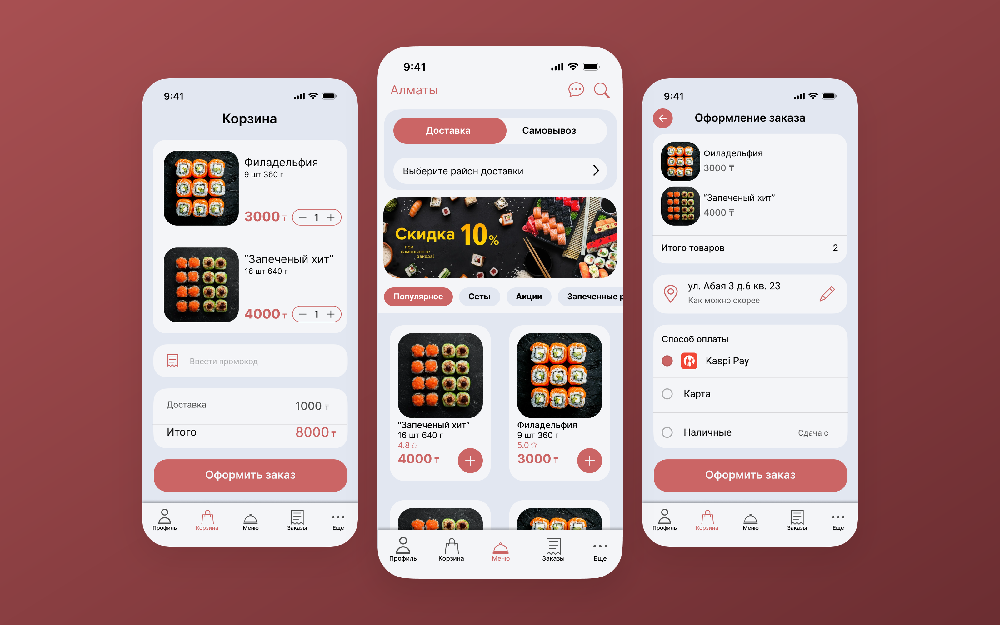

01Вход

Фирменный экран запуска, сразу ведёт в меню.
Доставка суши: быстрый заказ, понятный трекинг и UX-аудит референса.

Спроектировать мобильное приложение для доставки суши с быстрым заказом и понятным трекингом. Дополнительно — провести UX-аудит существующего референса и показать, как улучшить пользовательский опыт.
Шесть шагов заказа. Каждый экран появляется по мере прокрутки, чтобы путь читался как история.
Фирменный экран запуска, сразу ведёт в меню.
Способ получения и район выбираются сразу, ниже акция, категории и популярные позиции с кнопкой «+».

Состав заказа, промокод, стоимость доставки и итог на одном экране; кнопка оформления всегда на виду.

Адрес, время и способ оплаты собраны на одной странице: Kaspi Pay, карта или наличные.

Номер заказа, ожидаемое время 45–60 минут, адрес и оплата. Дальше — отслеживание.
Четыре этапа заказа иконками, карта и время до курьера. Финальный этап подсвечивается зелёным.
Сравнил «было» и «стало» и обосновал решения по четырём пунктам: модалка при входе, акцентный цвет, навигация и экран «Ещё». Подробный разбор — в Figma.
Один интерфейс, четыре ситуации: ожидание, сбой, пустота и успех. Веер собирает их в один набор. Наведи на экран, чтобы выделить пояснение.



Нажмите на схему, чтобы открыть её крупно. Файл в Figma